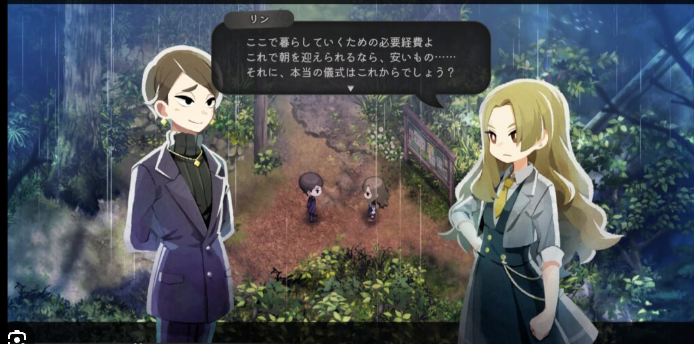
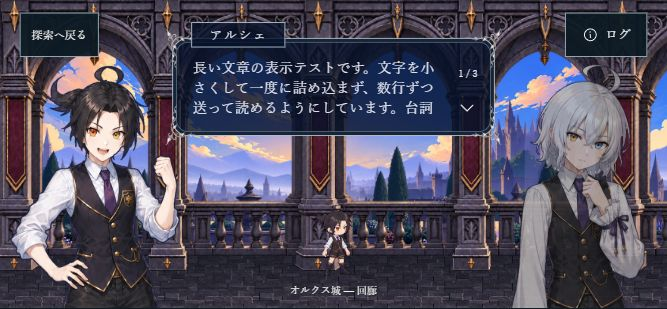
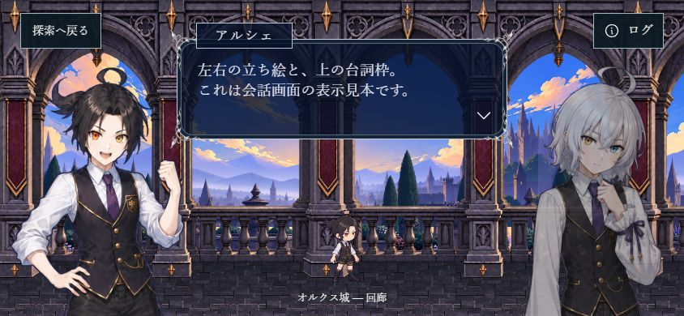
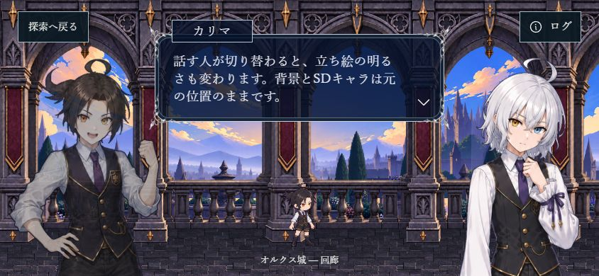

原作者の参照：左右立ち絵・上中央の台詞

参照は構図。背景・人物・銀細工・台詞は自作SRPGの素材へ置換。
スマホ横：長文を数行ずつ送る

実装：実際の2D回廊＋アルシェとカリマ

台詞枠408×124、色は仮。背景は移動させず、中央下のSDを残す。
台詞枠の詳細：文字・縁・送りボタン
右側の話者：顔の明るさを切り替え


参照は構図。背景・人物・銀細工・台詞は自作SRPGの素材へ置換。


台詞枠408×124、色は仮。背景は移動させず、中央下のSDを残す。
